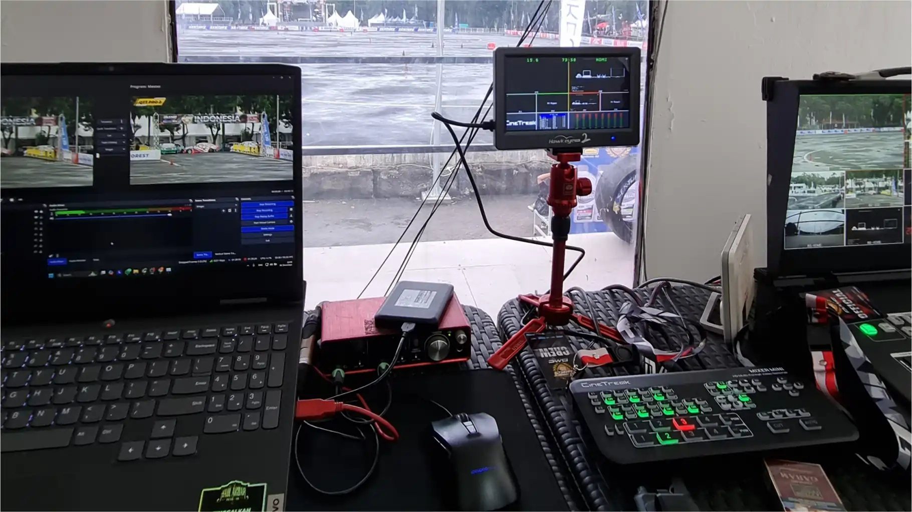
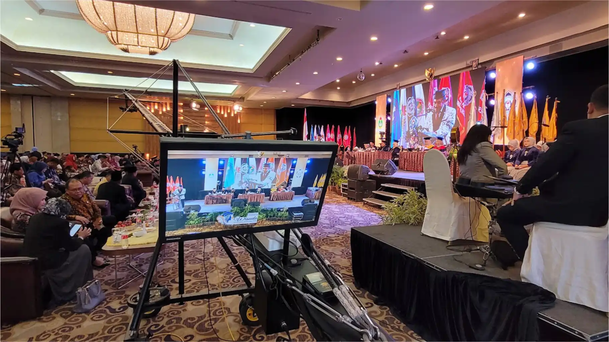
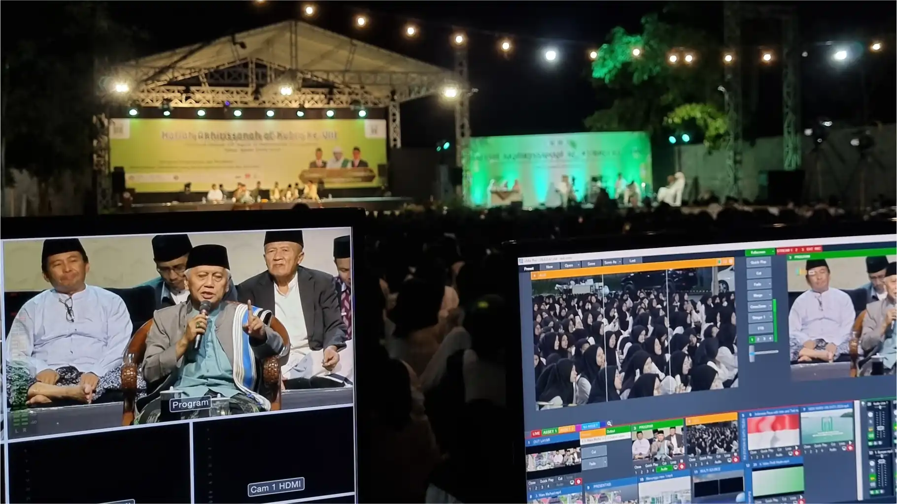

SATU PINTU
"Solusi media yang memukau untuk setiap cerita. Kami menghadirkan hasil akhir yang profesional dan memuaskan."



DOKUMENTASI
Project Event
Kejurnas Drift LFN BELKLO
Sirkuit Sentul Bogor

Wisuda UBHI
Universitas Bhineka PGRI